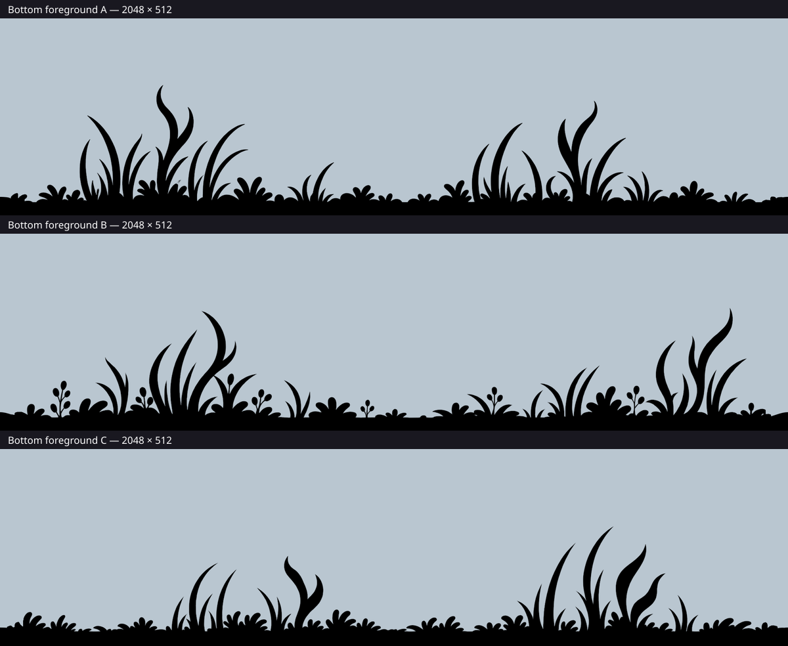

Black silhouette bottom foreground
Three distinct strips with a low connected base, scattered taller fronds and transparent negative space. Loop order: A → B → C → A.
The strip sits at Y = 568 on this 1080px-high preview. The light field is only for review; the PNGs contain transparency. Join markers follow the 2048px piece boundaries.
Three silhouette variations
